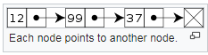

DATA STRUCTURES In C++ Programming
A data structure is the organization of and implementation of values and information. Data structures are different from abstract data types in the way they are used. Data structures are the implementations of abstract data types in a concrete and physical setting. They do this by using algorithms. This can be seen in the relationship between the list (abstract data type) and the linked list (data structure). A list contains a sequence of values or bits of information. A linked list also has a “pointer” or “reference” between each node of information that points to the next item and the previous one. This allows one to go forwards or backwards in the list. Furthermore, data structures are often optimized for certain operations. Finding the best data structure when solving a problem is an important part of programming.
data structer is a systematic way to store data
Basic data structures
- Array
- Linked list
- Stack
- Queue
- Graph
- Tree
Array
The simplest type of data structure is a linear array. Also known as a one-dimensional array. An array holds several values of the same type (Integer, Floats, String, etc). Accessing elements within the array is very fast. An array is normally of fixed size. After the size of the array is defined at the start, it may not be possible to increase the size of the array without creating a new larger array and copying all values into the new array. In computer science, an array data structure or simply an array is a data structure consisting of a collection of elements (values or variables), each identified by at least one array index or key. An array is stored so that the position of each element can be computed from its index tuple by a mathematical formula.
For example,
an array of 10 integer variables, with indices 0 through 9, may be stored as 10 words at memory addresses 2000, 2004, 2008, 2036, so that the element with index i has the address 2000 + 4 × i.
As the mathematical concept of a matrix can be represented as a two-dimensional grid, two-dimensional arrays are also sometimes called matrices. In some cases the term "vector" is used in computing to refer to an array, although tuples rather than vectors are the more correct mathematical equivalent. Arrays are often used to implement tables, especially look up tables; the word table is sometimes used as a synonym of array.
Arrays are among the oldest and most important data structures, and are used by almost every program. They can also be used to implement many other data structures, such as lists and strings. They effectively exploit the addressing logic of computers. In most modern computers and many external storage devices, the memory is a one-dimensional array of words, whose indices are their addresses. Processors, especially vector processors, are often optimized for array operations.
Arrays are useful because the element indices can be computed at run time. Among other things, this feature allows a single iterative statement to process arbitrarily many elements of an array. For that reason, the elements of an array data structure are required to have the same size and should use the same data representation. The set of valid index tuples and the addresses of the elements (and hence the element addressing formula) are usually, but not always, fixed while the array is in use.
The term array is often used to mean array data type, a kind of data type provided by most high-level programming languages that consists of a collection of values or variables that can be selected by one or more indices computed at run-time. Array types are often implemented by array structures; however, in some languages they may be implemented by hash tables, linked lists, search trees, or other data structures.
Linked list
A linked data structure is a set of information/data linked together by references. The data are often called nodes. The references are often called links or pointers. From here on, the words node and pointer will be used for these concepts.
Each node points to another node.
In linked data structures, pointers are only dereferenced or compared for equality. Thus, linked data structures are different than arrays, which require adding and subtracting pointers.
Linked lists, search trees, and expression trees are all linked data structures. They are also important in algorithms such as topological sort and set union-find.
Stack
A stack is a basic data structure that can be logically thought as linear structure represented by a real physical stack or pile, a structure where insertion and deletion of items takes place at one end called top of the stack. The basic concept can be illustrated by thinking of your data set as a stack of plates or books where you can only take the top item off the stack in order to remove things from it. This structure is used all throughout programming.
The basic implementation of a stack is also called a “Last In First Out” structure; however there are different variations of stack implementations.
There are basically three operations that can be performed on stacks. They are:
- inserting (“pushing”) an item into a stack
- deleting (“popping”) an item from the stack
- displaying the contents of the top item of the stack (“peeking”)
Queue
A queue is an abstract data type or a linear data structure, in which the first element is inserted from one end (the “tail”), and the deletion of existing element takes place from the other end (the “head”). A queue is a “First In First Out” structure. "First In First Out" means that elements put in the queue first will come out first, and elements put in the queue last will come out last. An example of a queue are lines of people waiting. The first person in the line goes first, and the last person in the line goes last.
The process of adding an element to a queue is called “enqueuing” and the process of removing an element from a queue is called “dequeuing”.
Graph
A graph is an abstract data type that is meant to implement the graph and hypergraph concepts from mathematics.
A graph data structure consists of a finite (and possibly mutable) set of ordered pairs, called edges or arcs, of certain entities called nodes or vertices. As in mathematics, an edge (x,y) is said to point or go from x to y. The nodes may be part of the graph structure, or may be external entities represented by integer indices or references. A graph data structure may also associate to each edge some edge value, such as a symbolic label or a numeric attribute.
Tree
The tree is one of the most powerful advanced data structures. It often appears in advanced subjects such as Artificial Intelligence (AI) and design. Surprisingly, the tree is important in a much more basic application - the keeping of an efficient index.
When a tree is used there is a high chance that an index is used. The simplest type of index is a sorted list of key fields. A tree normally has a defined structure. In the case of a binary tree, you can use a binary search to locate any item without having to look at every item.
The tree data type is a type of graph meaning that many algorithms made to traverse a graph also work with a tree however, the algorithms can be much similar and must have a dedicated start node, that is the node with no other nodes linking to it.
The problem with a simple ordered list occurs when you start adding new items and have to keep the list sorted - it can be done reasonably efficiently but requires some modifications. Additionally, a linear index is not easy to share because the whole index needs to be “locked” when one user edits it, whereas one “branch” of a tree can be locked, leaving the other branches editable by other users (as they cannot be affected).